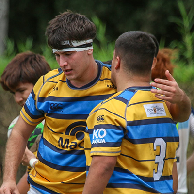

Infomación Personal
Soy Agustin, una persona organizada y responsable, la cual le encanta el trabajo manual, con buenas relaciones interpersonales y con la mejor disposición para realizar mis labores, escuchar cualquier corrección, y poder dar lo mejor de mí.
Amo el deporte y practicar cualquier tipo de actividad física y al aire libre. Pero mi gran pasión está por la pelota ovalada. El rugby es un deporte hermoso, donde lo practico desde los seis años. Un deporte que une y crea grandes vínculos.
Retomando información sobre mi profesión, les dejo a continuación más características y habilidades de mí.

Mi formación
Títulos
Estoy resivido de licensiado en Comunicación y Diseño Visual en la Universidad Nacional de Lanus (Unla).
Graduado del Bachillerato secundario en Comunicación de el establecimiento Institucional Del Prado.
Experiencia
Desarrollo de piezas gráficas para identidad visual y comunicación. Creación de contenido visual, composición, selección tipográfica y cromática, adaptación de piezas para distintos formatos. Manejo de herramientas como Adobe Illustrator, Photoshop y Canva.
Hoobies
Como dije anteriormente en mi tiempo libre disfruto del deporte, especialmente del rugby y el entrenamiento físico, actividades que me ayudan a desarrollar disciplina, constancia y trabajo en equipo.
También encuentro en el dibujo y el arte un espacio para explorar mi creatividad, experimentar con distintas formas de expresión y dejarme llevar por el proceso creativo.